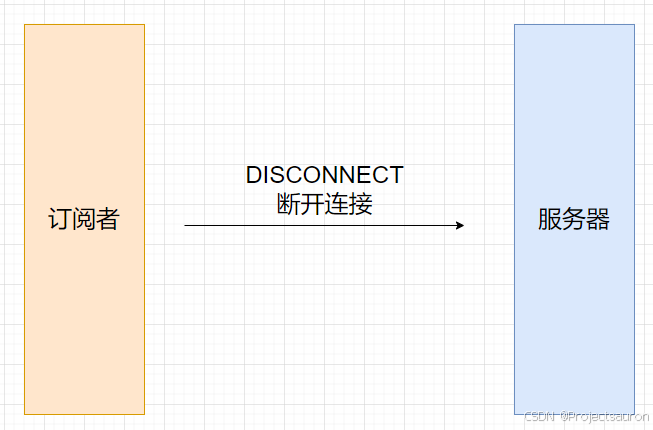

MQTT 协议概述
@toc
一、概述
MQTT（Message Queuing Telemetry Transport，消息队列遥测传输协议），是一种基于发布/订阅（publish/subscribe）模式的“轻量级”通讯协议，该协议构建于 TCP/IP 协议上，由 IBM 在 1999 年发布，并于 2013 年发布为开放标准。MQTT 协议专注于在低带宽、不稳定或高延迟的网络环境中，可靠地传输小型数据包。
MQTT协议具有以下特点：
- 轻量级：
MQTT的协议开销小，适用于资源受限的设备，如传感器、物联网设备等。 - 灵活和可扩展：
MQTT支持多种传输层协议，如TCP/IP、WebSocket等。它还提供了 QoS（Quality of Service）级别，以确保消息的可靠传输。 - 异步通信：
MQTT使用发布/订阅模型，发布者和订阅者之间不需要直接通信，使得系统的解耦更容易。 - 处理低带宽和高延迟网络：
MQTT协议可以在网络连接不稳定或带宽有限的环境中可靠地传输数据。
二、协议模型
1、组成部分
MQTT 协议基于 TCP/IP 协议，通常在应用层上使用，通过客户端和服务端之间的发布/订阅模型进行通信。它有以下几个主要组成部分：
Broker（代理服务器）：是MQTT网络中的中间件，负责接收来自客户端的消息，并将消息路由到符合订阅条件的客户端。Broker还负责维护客户端的连接状态。Publisher（发布者）：是发送消息的MQTT客户端。发布者将消息发送到Broker，并指定一个或多个主题（Topic）。Subscriber（订阅者）：是接收消息的MQTT客户端。订阅者通过向Broker订阅一个或多个主题，以接收与这些主题相关的消息。Topic（主题）：是消息的类别或标签，用于将发布者的消息与订阅者的接收行为关联起来。主题由一个或多个层级组成，可以使用通配符进行匹配。

2、客户端
MQTT 客户端可以是发布者或订阅者，用于发送或接收消息。MQTT 客户端可以运行在各种设备上，如传感器、嵌入式设备、服务器等。它们通过与 MQTT 服务端建立连接进行通信。
MQTT 客户端具有如下功能：
- 发布消息给其它相关的客户端。
- 订阅主题请求接收相关的应用消息。
- 取消订阅主题请求移除接收应用消息。
- 从服务端终止连接。
3、服务器
MQTT 服务器负责接收来自客户端的消息，并将消息路由到符合订阅条件的客户端。它还负责维护客户端的连接状态。MQTT 服务器通常运行在一个可靠的服务器上，并提供消息的持久化存储、安全认证、订阅管理等功能。
MQTT 服务器具有如下功能：
- 接受来自客户端的网络连接请求。
- 接受客户端发布的应用消息。
- 处理客户端的订阅和取消订阅请求。
- 转发应用消息给符合条件的已订阅客户端（包括发布者自身）。
三、MATT 通信过程
MQTT使用的发布/订阅消息模式，它提供了一对多的消息分发机制，从而实现与应用程序的解耦。这是一种消息传递模式，消息不是直接从发送器发送到接收器（即点对点），而是由 MQTT Broker 分发的。
1、连接服务器
客户端到服务器的网络连接建立后，客户端发送给服务器的第一个报文必须是 CONNECT 报文
在一个网络连接上，客户端只能发送一次 CONNECT 报文，如果出现第二个 CONNECT 报文，按照协议标准，服务器会将第二个CONNECT 报文当作协议违规处理并断开客户端的连接。
对于正常的连接请求，服务器必须产生应答报文，如果无法建立会话，服务器应该在应答报文中报告对应的错误代码。
2、订阅主题
MQTT 客户端可以订阅一个或多个主题，以接收与这些主题相关的消息。订阅的客户端被称为订阅者。
订阅消息的过程如下：
- 客户端与
MQTT服务端建立连接。 - 客户端使用指定的主题进行订阅。
MQTT服务端将订阅信息保存，并等待有与所订阅主题相关的消息到达。- 当有新的消息发布到与订阅主题匹配的主题上时，
MQTT服务端将消息路由给订阅者。 - 订阅者接收到消息，并进行相应的处理。
在 MQTT 中，主题（Topic）扮演着重要的角色。主题是一个用于标识消息类型或内容的字符串，如”weather/temperature”、”home/lights”等。订阅者可以通过使用通配符进行模糊匹配来订阅多个相关主题，如”weather/+”表示订阅以”weather/“开头的所有主题，”+”代表一个层级的通配符。
SUBSCRIBE 为每个订阅指定了最大的 QoS 等级，服务器根据这些信息分发应用消息给客户端。
SUBSCRIBE 报文拥有固定报头、可变报头、有效载荷。
当服务器收到客户端发送的一个 SUBSCRIBE 报文时，必须向客户端发送一个 SUBACK 报文响应，同时 SUBACK 报文必须和等待确认的SUBSCRIBE 报文有相同的报文标识符。
如果服务器收到一个 SUBSCRIBE 报文，报文的主题过滤器与一个现存订阅的主题过滤器相同，那么必须使用新的订阅彻底替换现存的订阅。新订阅的主题过滤器和之前订阅的相同，但是它的最大 QoS 值可以不同。与这个主题过滤器匹配的任何现存的保留消息必须被重发，但是发布流程不能中断。
3、发布消息
MQTT 客户端可以发布消息到 MQTT 服务端（当然，从服务器分发的报文给订阅者，也是属于 PUBLISH 控制报文。），通过指定一个或多个主题来标识消息的类型或内容。发布的消息可以是任意格式的数据，如文本、二进制数据等。发布消息的客户端被称为发布者（Publisher）。
发布消息的过程如下：
- 客户端与
MQTT服务端建立连接。 - 客户端使用指定的主题和内容发布消息。
MQTT服务端接收到消息后，将消息路由给符合订阅条件的订阅者（Subscriber）。- 订阅者接收到与其订阅主题相关的消息。
这里了解一个概念：QoS（Quality of Service levels，服务质量）：
服务质量是 MQTT 的一个重要特性。当我们使用 TCP/IP 时，连接已经在一定程度上受到保护。但是在无线网络中，中断和干扰很频繁，MQTT 在这里帮助避免信息丢失及其服务质量水平。这些级别在发布时使用。
- 如果客户端发布到
MQTT服务器，则客户端将是发送者，MQTT服务器将是接收者。 - 当
MQTT服务器向客户端发布消息时，服务器是发送者，客户端是接收者。
QoS 有三个等级：
QoS 0：这一级别会发生消息丢失或重复，消息发布依赖于底层TCP/IP网络。即：<=1
QoS 1：QoS 1 承诺消息将至少传送一次给订阅者。
QoS 2：使用 QoS 2，我们保证消息仅传送到目的地一次。为此，带有唯一消息 ID 的消息会存储两次，首先来自发送者，然后是接收者。QoS 级别 2 在网络中具有最高的开销，因为在发送方和接收方之间需要两个流。
4、取消订阅
客户端发送 UNSUBSCRIBE 报文给服务器，用于取消订阅主题。
UNSUBSCRIBE 报文固定报头的第 3,2,1,0 位是保留位且必须分别设置为 0,0,1,0。否则服务器必须认为任何其它的值都是不合法的并关闭网络连。具体的描述可以看协议文档。
UNSUBSCRIBE 报文的有效载荷包含客户端想要取消订阅的主题过滤器列表。UNSUBSCRIBE 报文中的主题过滤器必须是连续打包的 UTF-8 编码字符串。
UNSUBSCRIBE 报文的有效载荷必须至少包含一个主题过滤器列表，而且这个主题过滤器是已经被客户端订阅的，否则的话没有订阅也就没有取消订阅一说了。如果一个 UNSUBSCRIBE 报文没有有效载荷是违反协议的标准的，服务器也不会去处理它。
而对于服务器删除了一个订阅，那么它将不会再分发该主题的消息到这个客户端中。而且它必须完成分发任何已经开始往客户端发送的QoS1 和 QoS2 的消息，以保证消息的服务质量。
然后服务器必须发送 UNSUBACK 报文来响应客户端的 UNSUBSCRIBE 请求。UNSUBACK 报文必须包含和 UNSUBSCRIBE 报文相同的报文标识符。即使没有删除任何主题订阅（客户端取消订阅的主题未被订阅），服务器也必须发送一个 UNSUBACK 响应。
5、断开连接
DISCONNECT 报文是客户端发给服务端的最后一个控制报文。表示客户端正常断开连接。
DISCONNECT 报文的固定报头保留位必须全为 0。
客户端发送 DISCONNECT 报文之后必须关闭网络连接，不能通过那个网络连接再发送任何控制报文。
服务端在收到 DISCONNECT 报文时必须丢弃任何与当前连接关联的未发布的遗嘱消息。而且当客户端没有关闭网络连接的时候服务器应该主动去关闭网络连接。

四、MQTT 数据包结构
- 固定头（Fixed header），存在于所有
MQTT数据包中，表示数据包类型及数据包的分组类标识； - 可变头（Variable header），存在于部分
MQTT数据包中，数据包类型决定了可变头是否存在及其具体内容； - 消息体（Payload），存在于部分
MQTT数据包中，表示客户端收到的具体内容；
整体 MQTT 的消息格式如下图所示；
1、MQTT 固定头
固定头存在于所有 MQTT 数据包中，其结构如下：
其中，MQTT 消息类型是一个 4 位的无符号值，类型如下：
| 名称 | 值 | 流方向 | 描述 |
|---|---|---|---|
| Reserved | 0 | 不可用 | 保留位 |
| CONNECT | 1 | 客户端到服务器 | 客户端请求连接到服务器 |
| CONNACK | 2 | 服务器到客户端 | 连接确认 |
| PUBLISH | 3 | 双向 | 发布消息 |
| PUBACK | 4 | 双向 | 发布确认 |
| PUBREC | 5 | 双向 | 发布收到（保证第1部分到达） |
| PUBREL | 6 | 双向 | 发布释放（保证第2部分到达） |
| PUBCOMP | 7 | 双向 | 发布完成（保证第3部分到达） |
| SUBSCRIBE | 8 | 客户端到服务器 | 客户端请求订阅 |
| SUBACK | 9 | 服务器到客户端 | 订阅确认 |
| UNSUBSCRIBE | 10 | 客户端到服务器 | 请求取消订阅 |
| UNSUBACK | 11 | 服务器到客户端 | 取消订阅确认 |
| PINGREQ | 12 | 客户端到服务器 | PING请求 |
| PINGRESP | 13 | 服务器到客户端 | PING应答 |
| DISCONNECT | 14 | 客户端到服务器 | 中断连接 |
| Reserved | 15 | 不可用 | 保留位 |
标识位（DUP）：在不使用标识位的消息类型中，标识位被作为保留位。如果收到无效的标志时，接收端必须关闭网络连接：
| 数据包 | 标识位 | Bit 3 | Bit 2 | Bit 1 | Bit 0 |
|---|---|---|---|---|---|
| CONNECT | 保留位 | 0 | 0 | 0 | 0 |
| CONNACK | 保留位 | 0 | 0 | 0 | 0 |
| PUBLISH | MQTT 3.1.1 使用 | DUP1 | QoS2 | QoS2 | RETAIN3 |
| PUBACK | 保留位 | 0 | 0 | 0 | 0 |
| PUBREC | 保留位 | 0 | 0 | 0 | 0 |
| PUBREL | 保留位 | 0 | 0 | 0 | 0 |
| PUBCOMP | 保留位 | 0 | 0 | 0 | 0 |
| SUBSCRIBE | 保留位 | 0 | 0 | 0 | 0 |
| SUBACK | 保留位 | 0 | 0 | 0 | 0 |
| UNSUBSCRIBE | 保留位 | 0 | 0 | 0 | 0 |
| UNSUBACK | 保留位 | 0 | 0 | 0 | 0 |
| PINGREQ | 保留位 | 0 | 0 | 0 | 0 |
| PINGRESP | 保留位 | 0 | 0 | 0 | 0 |
| DISCONNECT | 保留位 | 0 | 0 | 0 | 0 |
QoS：发布消息的服务质量（前面已经做过介绍），即：保证消息传递的次数
- 00：最多一次，即：<=1
- 01：至少一次，即：>=1
- 10：一次，即：=1
- 11：预留
RETAIN：发布保留标识，表示服务器要保留这次推送的信息，如果有新的订阅者出现，就把这消息推送给它，如果设有那么推送至当前订阅者后释放。
2、MQTT 可变头
MQTT 数据包中包含一个可变头，它驻位于固定的头和负载之间。可变头的内容因数据包类型而不同，较常的应用是做为包的标识：
| Bit | 7 — 0 |
|---|---|
| byte 1 | 包标签符（MSB） |
| byte 2… | 包标签符（LSB） |
很多类型数据包中都包括一个 2 字节的数据包标识字段，这些类型的包有：PUBLISH (QoS > 0)、PUBACK、PUBREC、PUBREL、PUBCOMP、SUBSCRIBE、SUBACK、UNSUBSCRIBE、UNSUBACK2.3。
3. Payload消息体
Payload 消息体是 MQTT 数据包的第三部分，有 CONNECT、SUBSCRIBE、SUBACK、UNSUBSCRIBE 四种类型的消息：
CONNECT，消息体内容主要是：客户端的 ClientID、订阅的 Topic、Message 以及用户名和密码SUBSCRIBE，消息体内容是一系列的要订阅的主题以及 QoS。SUBACK，消息体内容是服务器对于SUBSCRIBE所申请的主题及 QoS 进行确认和回复。UNSUBSCRIBE，消息体内容是要订阅的主题。
五、示例演示
上文简单讲了一下 MQTT 协议，下面借助 MQTTX 和 MQTT.FX 工具来演示一下 MQTT 的工作。
首先在 MQTTX 上新建一个服务器，这里的地址就使用工具免费的测试地址就可以。为了简便，这里就不设置用户密码了。
然后在 MQTT.FX 配置好客户端：
连接成功：
然后订阅主题：
可以看到，当服务器发布一个消息的时候，客户端收到了相应的消息：
同理，现在让服务器订阅客户端的主题：
服务器也能收到相应的消息：